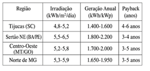

Radiação solar em tijucas
De acordo com o Atlas Brasileiro de Energia Solar (INPE, 2024), Tijucas apresenta os seguintes dados de irradiação solar:
- Média anual: 4,8-5,2 kWh/m²/dia
- Verão (dez-fev): 5,8-6,2 kWh/m²/dia
- Inverno (jun-ago): 3,5-4,5 kWh/m²/dia
- Irradiação anual: 1.752-1.898 kWh/m²/ano
O potencial de geração para um sistema de 1 kWp é de 1.400-1.600 kWh/ano, considerando perdas do sistema de 14-16%
Comparação com outras regiões brasileiras

A análise realizada demonstra a viabilidade técnica e econômica da energia fotovoltaica em Tijucas-SC. A irradiação solar média anual de 4,8-5,2 kWh/m²/dia permite retorno do investimento em 4-6 anos para sistemas residenciais, especialmente com incentivos como o Programa Luz do Povo.